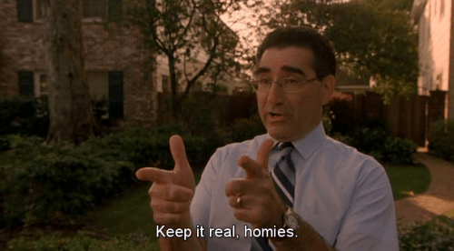

Thomas Hobbes is an Australian uni student hiding out in his mother's basement waiting for the singularity to arrive. As a backup plan he is secretly hoping to avoid the perils of an actual career by becoming a writer and travelling the world.


Many will never admit it, but the forming of hierarchies is a natural and inevitable result of any social grouping. The moment you join a new group of people (a class, workplace, sports team) individuals will begin undertaking subtle tests of each other’s mettle. These will decide who they will listen to and who they will ignore, who they will befriend and who they will ostracize, who they want to fuck, and who they don’t.
Passing these tests is a vital part of attaining social success. For those who have trouble socializing, your goals may not be all that high. At a bare minimum, you may simply want to avoid being “that guy.” You know who I mean:

There’s one in every group of more than two people. It’s that awkward kid in class who people always avoid sitting next to. The insecure work colleague who is never invited to anything. The clueless guy who is bullied for the slightest social mishap, made even more frequent by the maddening double standards people have.
You see, not only is “that guy” socially inept, he can never be socially adept. Even when he acts just like everyone else, trying hard to fit in, there seems to be some kind of unspoken agreement not to let the socially retarded kid gain an inch of popularity. He’s the one everyone’s making fun of, and that’s the way things are going to stay.
Few people will offer you genuine, useful advice on how this works. After all, why give the plebs the tools to revolt? But lets take an honest stab.

You stubbed your toe? Tough. A ball hit you in the face? Ignore it. A guy called you an idiot? Give him the finger and keep going.
Alphas males never show weakness. Betas are the ones who prick their finger then run around showing it to everyone. An alpha walks into a room with his leg in a cast and doesn’t mention it unless someone asks. Let others come to you, and remain as casual about your misfortune as possible.
This goes for how you organize your life as well. Don’t be the guy always losing things, or who is always asking to borrow a pencil or for a lift home, or who always turns up late (unless it is…fashionably late). Appearing not to give a shit can be an important social tool, but being simply disorganized is the opposite.
I noticed a curious example when driving to school camps—it would always be one of the unpopular kids who’d put up their hand first and ask if we could stop for a bathroom break. The cooler kids would remain silent, never breaking frame. Yet once we did stop, they’d pile off the bus and head to the bathroom just as much as everyone else.
There’s a saying here in Australia – you’re not a true Aussie unless you’re friends with at least one person just because they have a pool, a caravan, or a boat. Take advantage of this principle.
This overlaps with the above, but concerns your preparations before any kind of social gathering. Always turn up at parties carrying a slab of beer, a bottle of Smirnoff, or whatever your social group drinks, though be careful what kind you bring. Alcohol choice is perhaps the closest men come to fashion choices – we will notice it. People are typically assholes about this. Vodka cruisers are out – but vodka and soft drink may be fine.
On anything outdoorsy, bring packets of lollies, nuts or whatever sounds appropriate. Bring your phone or laptop with a killer music playlist. The last camp I went on, where we were in cabins, two guys bought an X-Box and stayed up till after midnight playing it.
Basically, make sure you bring props to help your interactions with others. This can work either for meeting girls or just talking to guys in general. Of course, don’t let people take advantage of you, but that should be obvious.
Fat kids are routinely ostracized. The tall muscled footballer less so. This doesn’t mean getting your nails done, but be sure to spray on deodorant, gel your hair, and dress fashionably. Roosh has mentioned that one of the downsides of being a modern man is that we must pay much more attention to grooming than previous generations.
Good grooming should become part of your daily routine. Any particular weakness in your appearance, do your best to address it. In 2015 there is no shame in going down to the chemist to buy pimple cream, or to take a pair of scissors and trim your ass hair. Nobody else is going to do these things for you.
Since I started uni, I decided that you only live once, and it was best to try new things while I was young. In the past year, I have gone out and done:
Seriously, just go talk to people. A lot of young guys give up too easily. I had a weird conversation a few months ago waiting for a train late at night. A guy came up to me and said “hi.” I asked if I knew him. He said no, sat down, introduced himself as “Stewie” and said he just felt like talking. We chatted for over an hour.
It turns out he does this all the time. He likes to go up to random strangers and say something to them like – “Hey mate, I’d just like to say, you’re looking good. Have a nice day!” and walk off.
In most environments (public transport, uni, workplaces) people seal themselves off behind a phone, earphones, a book, or something else. Once you break that ice, however, conversation tends to flow easily.
Something I’ve realized is that “nerdy” people are not necessarily smarter than the general population. They may be great in certain specialized fields, but the real difference is that while they’ve spent years learning about cellular biology, the history of ancient Greece or memorizing every Star Trek episode ever broadcast, others were immersed in honing their day-to-day social skills.
It all tends to even out in the end. Just watch the Big Bang Theory. The guys are A-grade physicists and engineers – but Penny knows how to actually talk to people. I’ve come to regret a lot of wasted time in high school where I was often the nerdy kid who’d go to the library to read a book rather than have mates to chill with outside. Things did improve over time, but once you fall a few years behind its very hard to catch up.

Learning the language of any new social group is key. Otherwise, you’ll stick out like you’ve entered a foreign country. Sometimes, it is just better to be silent. This is the most important single thing I have learned about socializing.
I’ll admit I was a bit Hermione-ish in my youth, being the kid who’d always put up his hand to answer a teacher’s question. I eventually realized this was social poison.
Stay silent, remain mysterious, sit at the back of the class and rarely raise your hand. Don’t be too cheap with your time or your attention or it will quickly become valueless. This is probably the origin of the stereotype of the “strong, silent type” – a good kind of person to be.
I don’t mean never initiate conversations (of course you should) but always have a purpose in mind. Keep inane chatter to a minimum. Give people something worth listening to. Cultivate passions and skills of value so that others find themselves coming to you. This is true on social media as well.
We all know that ideally in a conversation you want to be using fewer words than the other person. Your aim is that others should be contacting you first most of the time.
Now I don’t know if all this comes naturally to others and I’m just struggling along in the distance. Then again, perhaps taking the long way up has gained me insights others take for granted. If somebody had told me all this when I was 14 or so, I think I’d have had a much better time in high school.
If you’re currently stuck there, I would like to give the advice that your life doesn’t really begin until you turn 18. So many movies obsess over it, but in hindsight, school is a very small pond. If you’re already the omega in an established social group – sorry, but chances are you’re stuck there.
Whenever you enter a new one however, the above can help you fit right in, or even rise to the top, rather than sink to the murky depths of social isolation.
Read More: America’s Sexual Hierarchy Favors Alpha Males More Than Ever
{kind=link}
{kind=link}
{kind=link}
{kind=link}